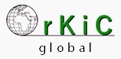
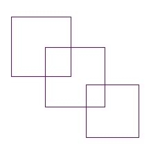

Organic KickScooter Company

Editorial :
Publicaciones electrónicas : metamonopatínismo !
OrKiC es una combinación de publicaciones, de redes sociales, de videos, de fotos y una revista
Esos tributarios, afluentes, concurren para constituir lo que a la vez es un actor de una práctica marginal y marginada – el monopatín urbano por parte de adultos – un ensayo sobre esa práctica, y un intento por llevar esa práctica a una inclusión cultural : un acto cultural por el medio de la mobilidad, el metamonopatínismo.
Ese medio/ensayo incluye :
© OrKiC webmaster - All Rights Reserved
OrKiC Organic KickScooter Company ® ™ | A sustainable mobility company